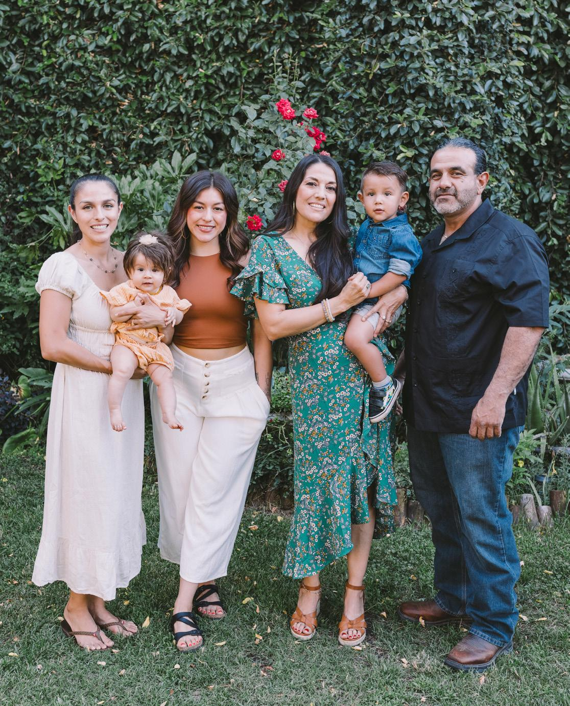

About Us
Watson’s Organic Market & Cafe has embraced healthy and natural foods since 1957, when it was opened by Lionel and Juanita Watson as Watson's Veggie Garden. The Watsons ran the business for three generations, and since 2022 Watson's has continued its legacy under new ownership by the Cantu family, which includes husband Joaquin, wife Eva, and sisters Ziah and Emerol.
The Cantu family is proud to serve Visalia and the Central Valley by sourcing organic products from local producers and maintaining a varied menu that includes vegetarian and vegan options. Additionally, the Cantu family has begun to offer venue bookings for Watson's enclosed "secret garden," located behind the market. The garden continues to remain open to customers during normal business hours and is a delightful retreat from the busy streets of downtown Visalia.
